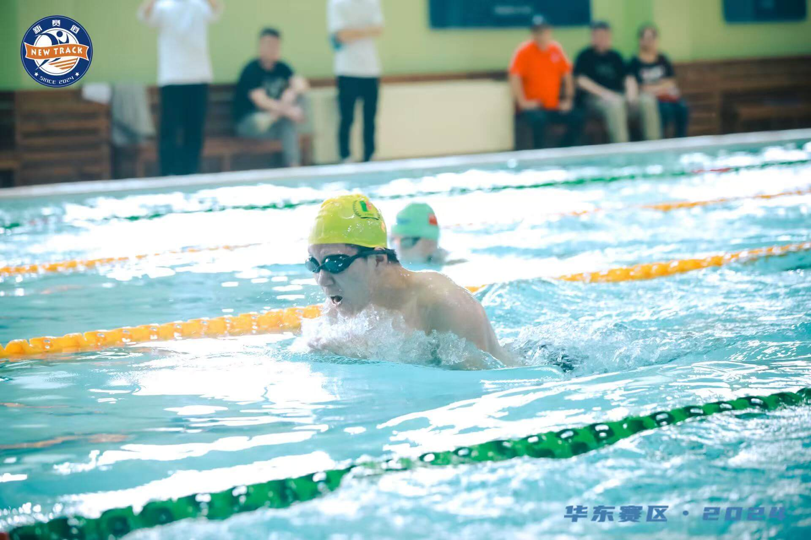
Engineering Student | Robotics Captain | Athlete
Passionate about robotics, aquatic‑safety engineering and sports.
I am an 11‑grade international high‑school student. I am passionate about hands‑on engineering design, robotics innovation and sports. I serve as team captain for swimming and FTC robotics, participate in varsity soccer, and play drums in school band. My main interest lies in water‑related engineering and sports‑tech research.
Swam for 10 years. Designed customized training system for high‑school athletes. Assisted warm‑ups and movement monitoring; co‑organized competition trips.
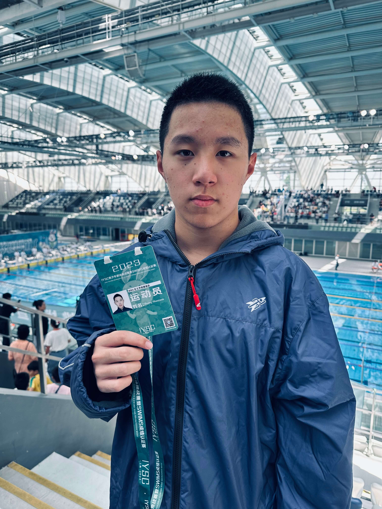
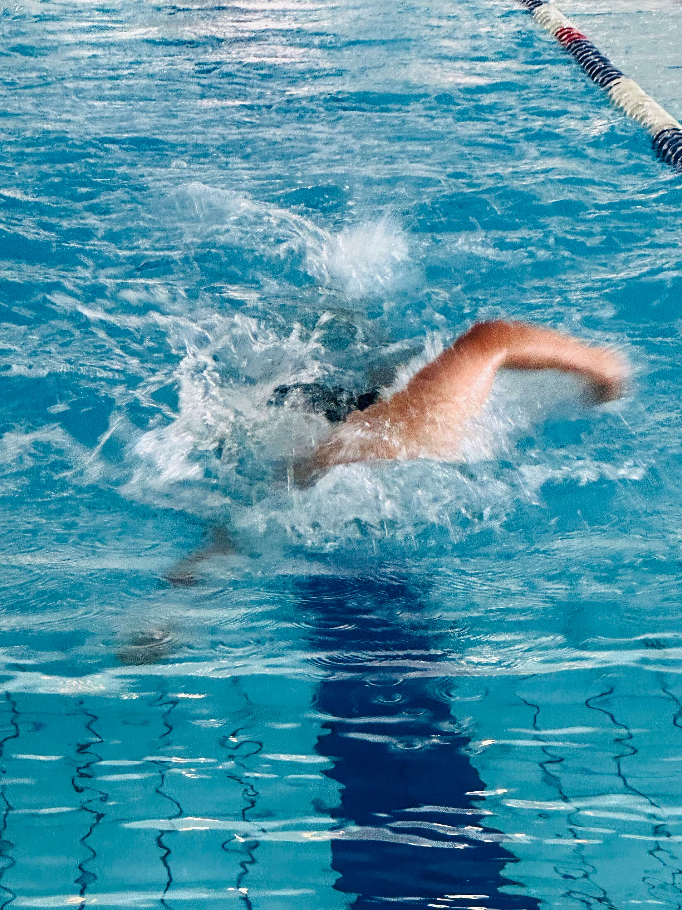
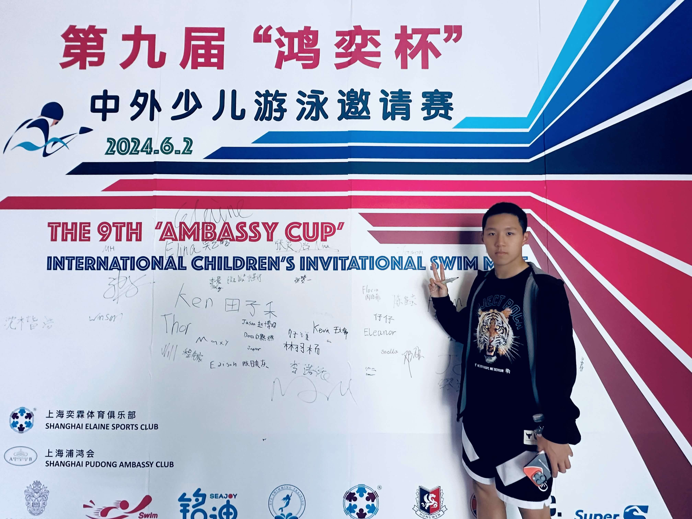
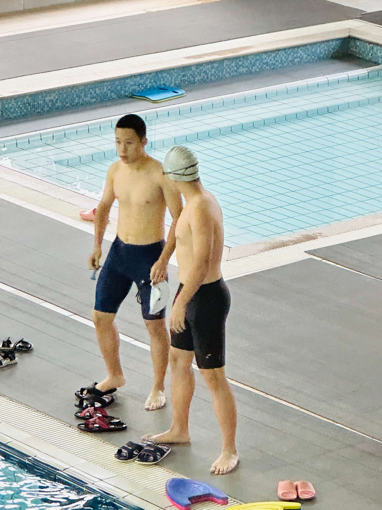
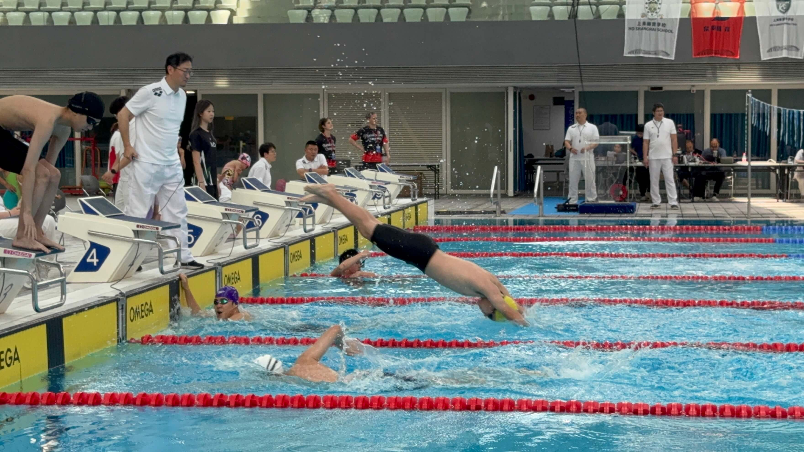
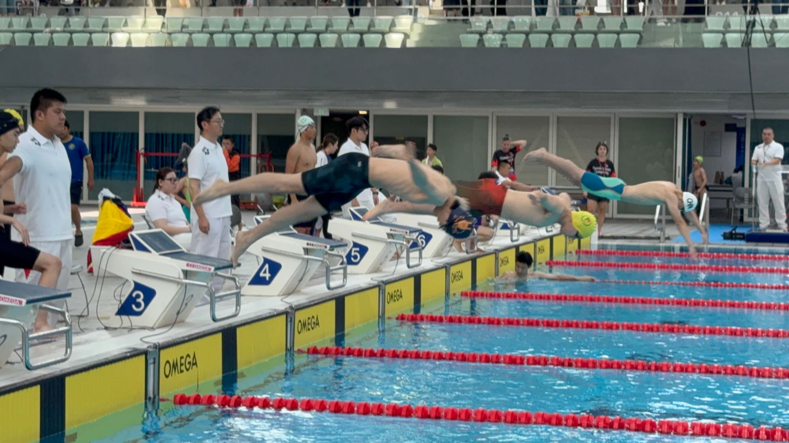
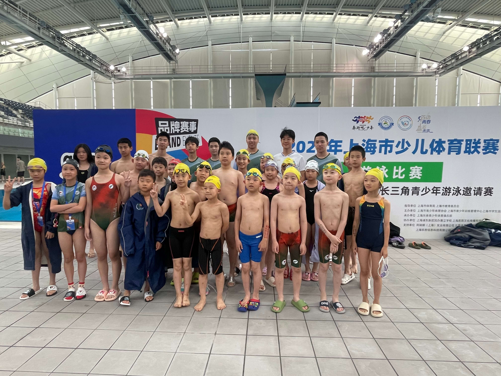
5‑year soccer experience. Weekly training, inter‑school & intra‑school matches. Discussed defensive strategies and supported team morale.
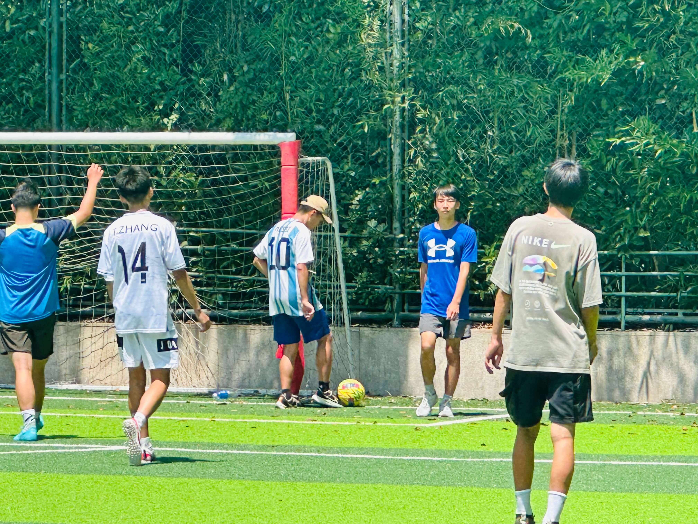
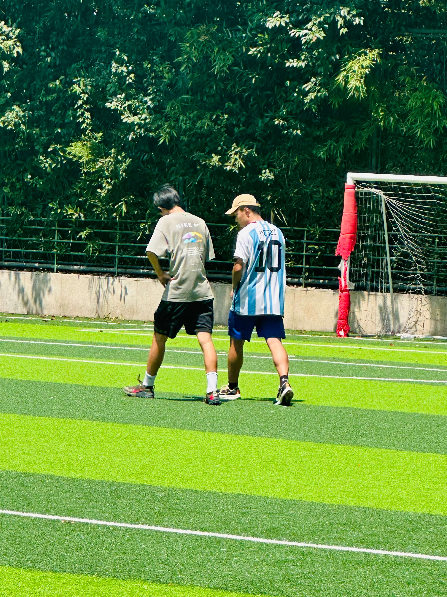
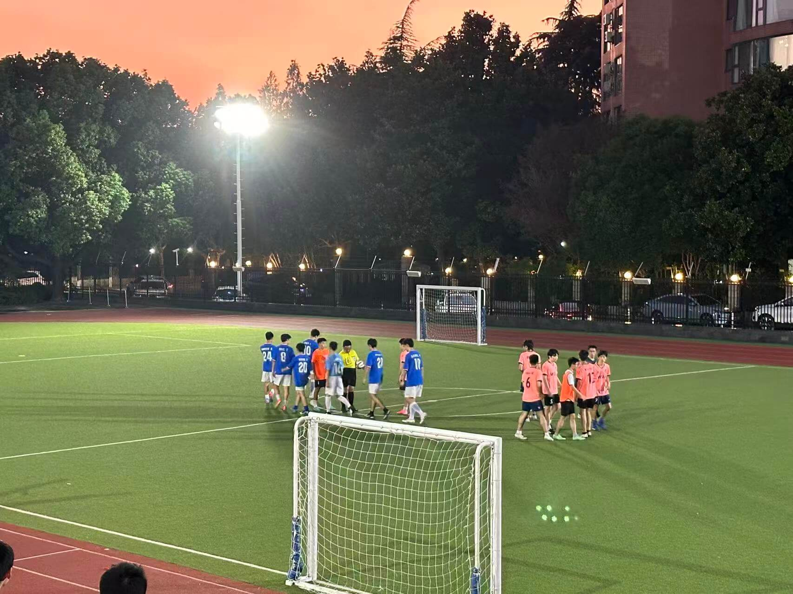
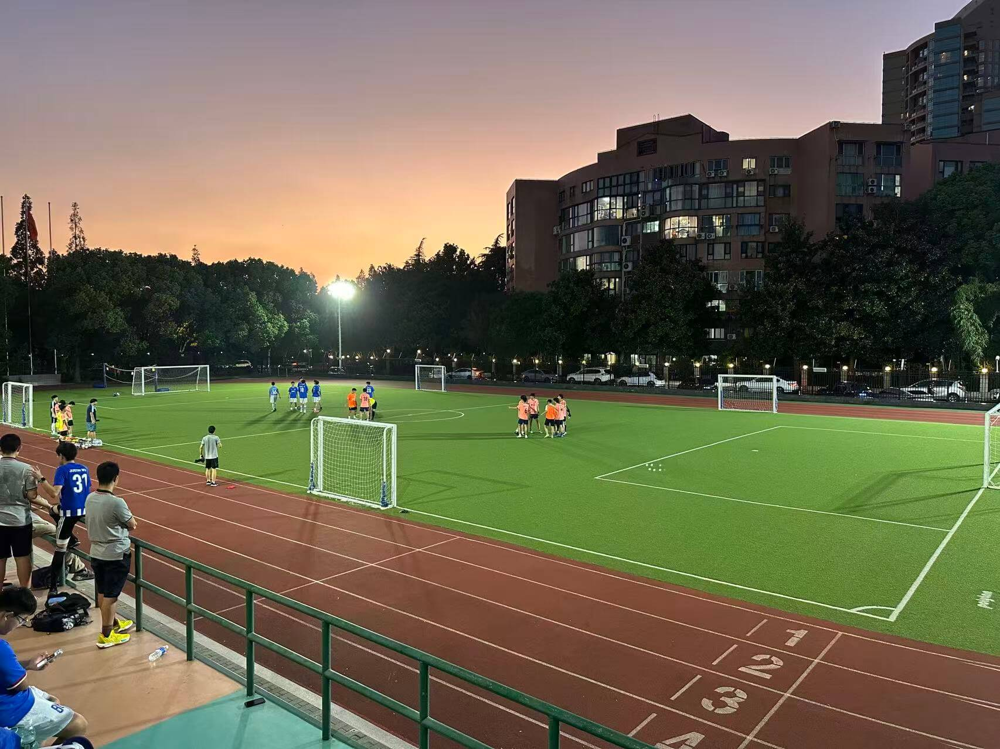
Designed, built, tested and debugged competition robots. Trained new team members, connected physics theory with hands‑on building. Operated and repaired robots on competition days.
Promote practical engineering among students. Created recruitment games; shared updates on robotics & AI; hosted lectures and discussions on technology ethics.
Researched: To what extent does technology improve customer value in sports‑training businesses. Conducted field trips and interviews; collected data and finished research report.
Studied mechanics. Completed hands‑on labs including mousetrap car, bending test and spaghetti‑bridge design; adjusted structures to improve stress tolerance.
Taught swimming and corrected students’ gestures one‑on‑one. Led floating‑boat practice, designed training plans and adjusted for each learner.
Started drumming at age 4. Weekly rehearsals with keyboard and guitar players. Performed in school concerts and graduation ceremonies.
Built waterproof wearable safety device with sensors. Triggers airbag under dangerous heart‑rate / blood‑oxygen conditions; performed real‑world tests and iterations.
Designed and coded wave‑producing vessel. Embedded OpenMV to record underwater swimming strokes for analysis. Completed field testing and market research on swim‑training equipment.
Email: jasonhsx@126.com